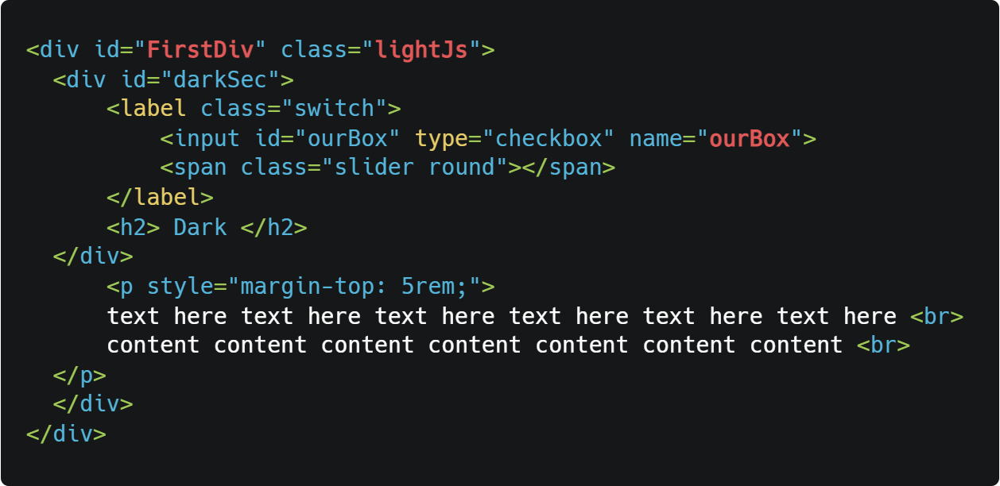
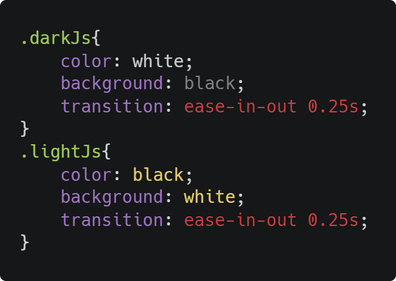
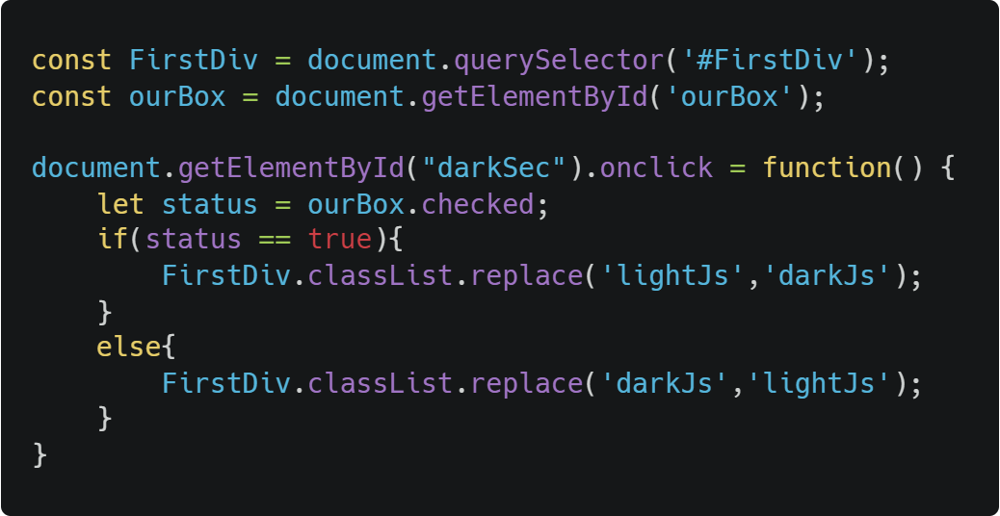

Dark
text here text here text here text here text here text here
content content content content content content content
text here text here text here text here text here text here
content content content content content content content
text here text here text here text here text here text here
content content content content content content content
Dark mode
has become very popular, this is how you can add it to your project using JavaScript + DOM manipulation
HTML file

FirstDiv
lightJsis the default class we are going to use
classes according to the checkbox status
Css file
JavaScript file
Full code Here